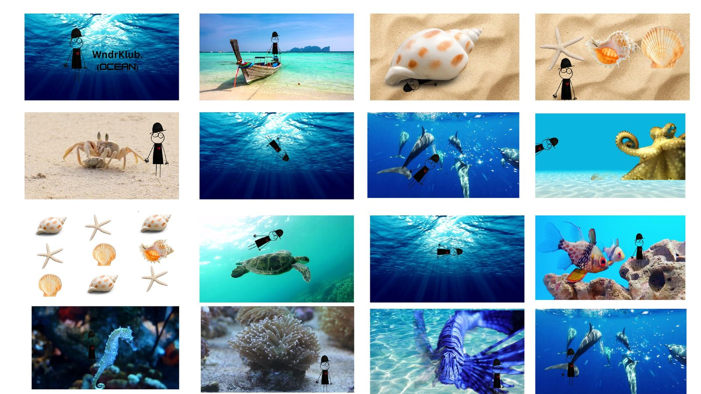
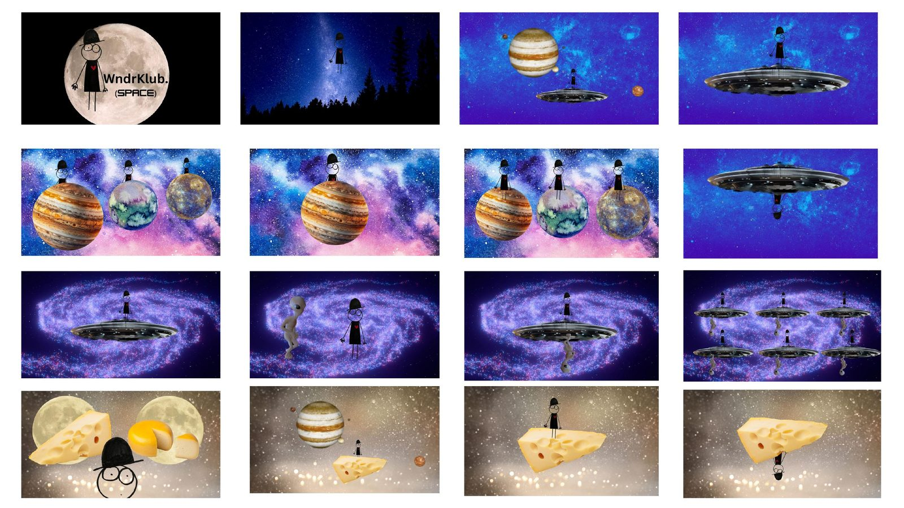
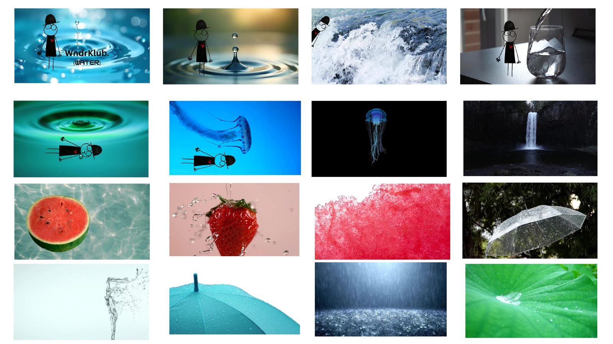
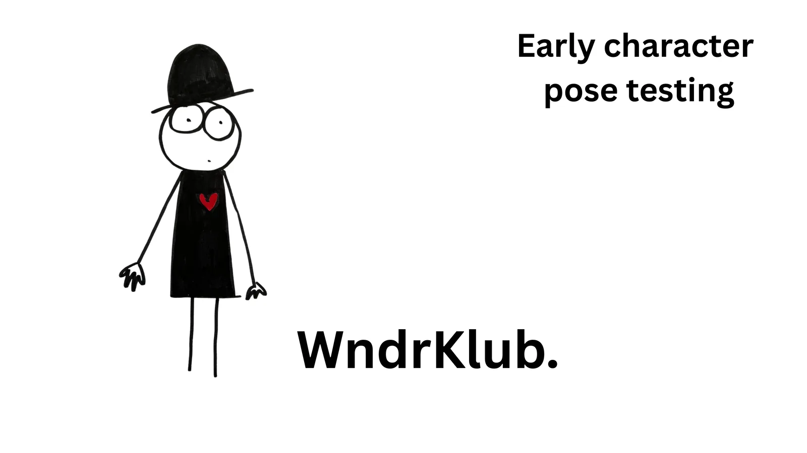
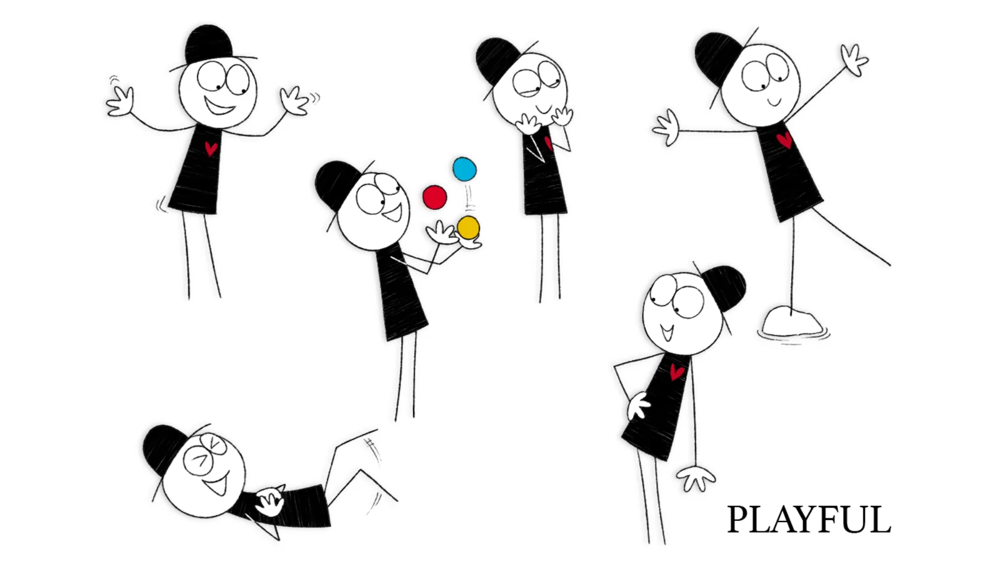

WndrKlub.
An animated mixed-media series for 3 to 7 year olds.
Created by Curious Dreamers.
scroll
An animated mixed-media series for 3 to 7 year olds.
Created by Curious Dreamers.
A puddle becomes an ocean. A shadow becomes a giant. A crack in the pavement becomes a road to somewhere else.
WndrKlub shows children that anything becomes extraordinary the moment you put a frame around it.


He notices what everyone else walks past: the sway of a tree, the reflection in a window, the sound a door makes when it closes slowly. He pauses where others move on, framing the ordinary until it becomes extraordinary.

WndrKlub is made to be heard as much as seen. Music threads through every episode. Rhythm, tone and the happy accidents of sound shape the story as much as the pictures do. A dripping tap becomes a beat. A creaky door becomes a melody. Sound becomes music, and music becomes sound, creating a sound world that is playful and surprising.




Hand-drawn line, live action, photographs, cut paper, the textures of a child’s art table. A drawn Wndr(er) walks through a real street. A real puddle sits inside a sketched panel.
If a child watches and thinks “I could make that”, it’s working.




Built from the oldest animation tools there are, so children can see how it’s made and do it themselves.
Designed alongside Scotland’s Film and Screen Education curriculum, it gives teachers a five-minute episode, a folded piece of paper and a pencil. That’s the whole kit.
Young animators trained in Scotland run workshops where children make films of their own.






Wndr(er) test poses by Dixie O’Malley, Young Animator of the Year 2024 (2D Animation, 15 to 18).
Four young animators trained in Scotland, one brief: tell a story through comic frames. These are their tests.